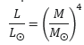
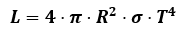
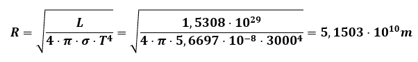
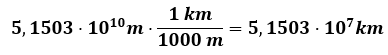
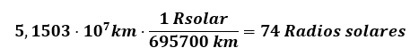
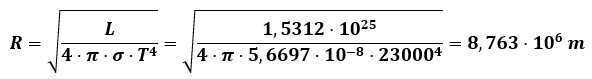
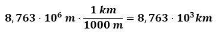
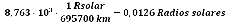

Queremos determinar la masa aproximada de una estrella 40 ERIDANI A. Su luminosidad absoluta es de 0,457 LΘ, su magnitud absoluta es de 5,93 y su índice B-V es de 5300. ¿Cuál es su masa expresada en masas solares?
Respuesta:
Si nos vamos al diagrama HR, vemos que su masa va a estar comprendida entre 0,43 y 2 masas solares. Por tanto, de las expresiones disponibles tenemos que usar la expresión:

De donde deducimos que:
Luego M = 0,82 veces la masa del Sol.
Puedes ver la resolución en vídeo en el enlace:
Vídeo de elaboración propia. 40 ERIDANI A(CC BY-SA)
Ejemplo 2
ESTRELLA MIRA
La estrella MIRA. También conocida como “omicrom ceti” es una estrella variable de la constelación de Cetus (la ballena). Esta estrella tiene una temperatura en su superficie de 3000 K y una luminosidad absoluta es de 1,5308 · 1029 W. ¿Cuáles son tu tamaño y distancia? Usa además el diagrama H-R para averiguar el tipo de estrella que es.
Respuesta:
En este caso nos proporcionan la luminosidad absoluta de la estrella y no la relativa. Usamos la ecuación LRT para obtener el tamaño de la estrella:


Teniendo en cuenta que el radio del Sol es de 695700 km, podemos averiguar cuantas veces es mayor la estrella que el sol. Para ello convertimos el radio de la estrella a kilómetros.

Para saber cuántas veces es mayor el tamaño de la estrella que el tamaño del sol, dividimos el radio de la estrella así obtenido entre el tamaño del sol.

Esto indica que el tamaño de la estrella Mira es aproximadamente 74 veces el tamaño del Sol.
Se trata por tanto de una estrella más fría que el sol pero mucho más grande. Es la descripción de una gigante roja.
Puedes ver los cálculos mediante un vídeo, en el enlace:
Vídeo de elaboración propia. Estrella MIRA(CC BY-SA)
Ejemplo 3
SIRIO B
La estrella Sirio A, tiene una estrella compañera mucho más pequeña que ella. Esta estrella tiene una temperatura aproximadamente igual a 23000 K. Su luminosidad absoluta es de 1,5312 · 1025 W. Calcula su tamaño y la distancia a la que se encuentra de nosotros. ¿Qué tipo de estrella es? Usa el diagrama H-R para averiguarlo.
Solución:
Con estos datos, el radio aproximado es de:

Ese pequeño tamaño y esa temperatura tan elevada, indica que se trata de una enana blanca.
Convertimos ahora el radio de la estrella a kilómetros.

Para saber cuántas veces es mayor el tamaño de la estrella que el tamaño del sol, dividimos el radio de la estrella así obtenido entre el tamaño del sol.

Que suele escribirse así: RSIRIO B = 0,0126 RΘ.
Esto indica que el tamaño de la estrella SIRIO B es aproximadamente 0,0126 veces el tamaño del Sol.
Si miramos en el diagrama H-R. Observamos que se trata por tanto de una estrella más caliente que el sol pero mucho más pequeña. Es la descripción de una enana blanca.
Puedes acceder a un vídeo explicativo de los cálculos en el enlace: